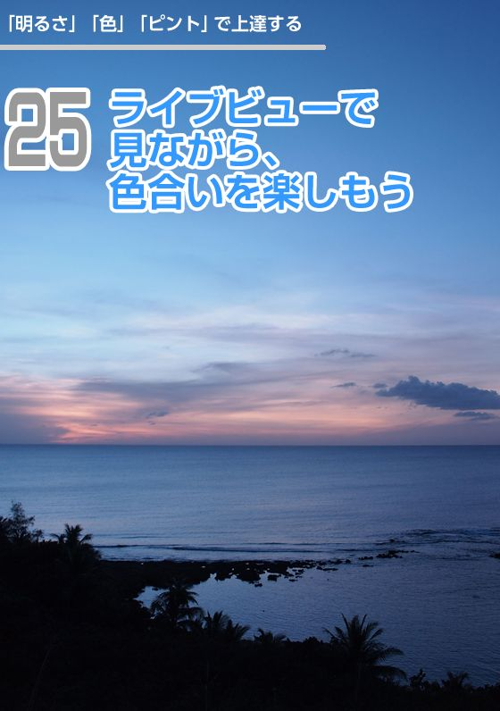

| 知識ゼロからの 一眼カメラ入門 | |
| 吉住 志穂 | |
| (2017) | |
知識ゼロからの一眼カメラ入門
吉住志穂
目次
一眼カメラの始め方
「撮影モード」で上達する
「明るさ」「色」「ピント」で上達する
「レンズワーク」で上達する
【シーン別】ステップアップ撮影術
01
最初のワクワク！ドキドキ！が大切
はじめてカメラの箱を開けるとき、まるで宝箱を開くような気持ちになります。真新しいカメラにレンズを付けてさっそくシャッターを切ってみると、パシャという音とともに画像が写し出される。あたりまえのことなのにすごく新鮮ですね！
さて、そのカメラで何を撮ろう？ 南の島の青い海、美しい花々、かわいい子ども、お気に入りの小物......想像しただけで、ワクワク！ドキドキ！ あなたが手にした一眼カメラは、可能性がいっぱい。カメラを持って撮影に出かけましょう。
02
一眼は光を感じるセンサー部分が大きいから、
ボケる！ きれいに撮れる！
一眼カメラもコンパクトデジタルカメラも、どちらも同じカメラ。それなのに、プロはどうして一眼カメラを使うのでしょうか。それは、一眼カメラならではの魅力があるからです。
一眼カメラは、コンパクトカメラに比べて、撮像素子と呼ばれる、レンズから入ってきた光を受けて電気信号に変換する電子部品（フィルムカメラのフィルムにあたる部分）がとても大きいので高画質。大きくプリントするときほど、その差がはっきりするのです。
【撮像素子の大きさ比較】

一眼カメラ：フルサイズの撮像素子
（36×24mm）
一眼カメラ：APS-Cサイズの撮像素子
（23.4×16.7mm）
一眼カメラ：フォーサーズの撮像素子
（17.3×13.0mm）
高級コンパクトカメラ：1/1.8型
（6.9×5.2mm）
普及コンパクトカメラ：1/2.5型
（5.7×4.3mm）
撮像素子が大きいほど背景がボケやすいという特徴もあります。高感度での画質も高く、暗い場所でもきれいに撮れますし、さまざまなタイプのレンズに交換できることから、表現の幅に広がりがでます。
デジタルカメラの撮像素子（イメージセンサーとも）のサイズのひとつ。35mmフルサイズに比べると小さいが、装着レンズの焦点距離が約1.5～1.6倍になるので望遠撮影にメリットがある。
（フォーサーズシステム規格とも）フォーサーズ（Four Thirds）システムは、デジタル一眼カメラの規格のひとつ。撮像素子サイズはAPS-Cサイズよりも小さいが、レンズの小型化、賛同メーカー間の互換性にメリットがある。
携帯性ではコンパクトカメラにかないませんが、一眼カメラは写真を撮る上でいろいろなメリットがあるのです。
03
どちらも、あなたの楽しさと
可能性を広げます
一眼カメラには、「一眼レフ」カメラと「ミラーレス」カメラとがあります。
両者の違いはカメラ内にある反射ミラーの有無。一眼レフカメラは反射ミラーがあるのでファインダーで像を確認できますが、ミラーレスカメラは電子ビューファインダーや液晶ディスプレイを通じて像を見る構造になっています。
ミラーレスカメラは反射ミラーがないぶん、小型・軽量なタイプが多く、日常的にカメラを持ち歩くのも苦になりません。旅行にも気軽に携帯することができます。
いっぽう、一眼レフカメラはファインダーで像が捉えられるため、動きのある被写体をファインダーで追いかけるのに有利です。

04
メモリーカードと
予備バッテリー購入がおすすめです
カメラを買ったらさっそく撮影！のその前に、同梱品を確認します。説明書を見ながら、カメラ、レンズ、バッテリーなどの用品に不足や破損がないかをチェックしてください。
カメラの購入に合わせてメモリーカードを用意しましょう。以前は機種によっていろいろなタイプが使われていましたが、最近ではSDカード、またはコンパクトフラッシュが主流です。
メモリ容量や書き込み速度が異なるので、撮影スタイルに合わせて購入します。
メモリーカードは使用前にフォーマットを行ってください。
その他、予備バッテリーをひとつ購入しておくと安心です。日帰りであれば予備バッテリーをひとつ、一泊以上するなら充電器を持って行くのがベター。
カメラやレンズについたホコリをはらうブロアーやレンズ表面を拭うクリーニングクロスも揃えておきましょう。
撮影の前にはバッテリーをフル充電しておきましょう。フル充電するには時間がかかるので、あらかじめ準備しておきましょう。
カメラにレンズを装着し、バッテリー、メモリーカードを挿入し、ストラップを付けます。これで準備万端です！
05
ブレ写真を撮らないための
カンタンで大事なことです
カメラをしっかり構えることで、手ブレを防ぎやすくなります。例を参考に、実際に構えてみましょう。
まず、カメラを右手に持ち、シャッターボタンに人差し指を添えます。左手はレンズを下から支えるように持ち、ズームリングを回せる位置に指を添えるといいでしょう。そして両脇をグッと引き締めます。これが基本の正しい構え方です。
横位置の場合は右手が右側に、縦位置の場合は2種類あって、右手が下にくる場合と、右手が上にくる場合です。
ファインダーで撮影する場合は、顔をカメラにグッと当てるようにします。ライブビュー撮影では、腕を少し伸ばすようになるので、よりしっかりと腕を固定しましょう。
手ブレ補正機能が付いていても、あくまで補助的な機能です。常にブレないよう意識して、しっかり構えましょう。
06
「撮る・再生」「撮る・再生」
を繰り返そう
実際に撮影してみましょう。最初は一番カンタンなフルオート撮影から始めましょう。
モードダイアルをオートに合わせます。シャッターボタンを半押しすると、ピントが合います。このとき、ピピッという音とともに緑色の丸いマークが点灯します（カメラによって異なる場合があります）。これがピントが合ったサインです。正しくピントが合うと点灯し、ピントが合っていなければ点滅します。
ピントが合ったら、さらにシャッターボタンを押し込むと、シャッターが切れます。これで撮影できました。
撮った写真を確認するには、三角マークの再生ボタンを押します。撮ったらすぐにチェックできるのが、デジタルカメラのいいところ。失敗していないか、思ったように写っているか、確認をするクセをつけておくといいですね。

07
ハッとしたら「撮る」、
考える前に「撮る」
せっかくカメラを買ったのに、何を撮ればいいのかわからないという方、けっこういるんですよ。
でも、何も迷う必要はありません。シャッターチャンスは劇的なシーンとは限りません。自分が心を動かされた被写体に向かってシャッターを切ればいいのです。
アレなんだ？ これ素敵！ 被写体は日常の中にいっぱい潜んでいます。気に留まったものは、すべてが被写体。失敗を恐れずに、まずは撮る。たくさん撮る！ これが上達への第一歩です。
08
「プログラムモード」は
使い込めるモードです
撮影に慣れたらオートからP（プログラム）モードへステップアップしましょう。
機種によって設定方法は異なりますが、モードダイアルなどで撮影モードをPにします。Pモードはプログラムオートといって、絞りとシャッター速度の組み合わせはカメラ任せですが、オートモードとは違って、露出補正やISO感度、ホワイトバランスなどの設定が任意でできるようになります。
光に対する敏感度を表す国際規格。数字が大きいほど敏感度が高く、弱い光に反応する。ただし感度が高くなるほど画質は劣化する傾向にある。
Pモードは、少しずつカメラを自在に設定するための一歩ですね。しかし、ひとまずそれらの細かい設定はこれから覚えるとして、まずはどんどん撮影してみましょう。設定を気にせず撮影ができるのが、Pモードのいいところです。
09
Pモードのまま「絞り」が
変えられます
Pモードでも絞りの値を動かすことができます。これをプログラムシフトといいます。
絞り値はF値（えふち）ともいい、ファンダー内、もしくは液晶画面上にF◯というように表示されているので確認しましょう。Pモードの状態でダイアルを回すかボタンを押すことで、絞り値が変化します。
【Pモード：絞りを変えて撮り比べる】
この絞り値は、数値が小さいほど背景がボケやすくなります。カンタンな撮影モードですが、少し工夫をすることができましたね。
10
背景をボカす「4つの要素」
ふんわりと背景がボケた写真は素敵ですよね。背景がボケた写真が撮りたくて、一眼カメラを買うという方も少なくありません。しかし、一眼カメラを使ったからといって、必ず背景がボカせるわけではないのです。
背景をボカすためには「絞りを開ける」「焦点距離を長くする」「近づく」「背景との距離を離す」という４つのポイントがあります。
これらをすべて取り入れることで、憧れのボケ写真を撮ることができます。次の項でひとつひとつマスターしましょう。
さぁ、ふんわりフォトの世界へ！
【ボケを決める4要素】
11
「絞り優先オート」という
モードにします
絞り値を小さくするためには、撮影モードを「絞り優先オート」と呼ばれるAまたはAvモードに合わせましょう。
絞り優先オートにすると、絞り値（F値）を任意で変更することができます。背景をボカすには、この値を最も小さい数字にします。
レンズによって、また同じレンズでもズームを変えると最小値が変わるので注意しましょう。絞り値を変えて同じものを撮り比べると、背景のボケ具合に違いが出るのがわかります。
【絞り値による背景のボケの比較】
絞り値を変えると、シャッター速度も同時に変化します。絞りの数値を大きくするほど、シャッター速度が遅くなるので"ブレ"に注意しましょう。

12
レンズを望遠にするほど、
ボケは大きい
背景のボケ具合は、レンズによっても変わります。キットのズームレンズでは広く写る「広角」から、アップで写る「望遠」にズームして写る範囲を変えることができますが、広角と望遠では望遠の方が背景がボケやすいのです。
【焦点距離の違いとボケの違い】
遠いところの被写体を撮るから望遠に、近いものは広角にとズームするのではなく、撮影前にあらかじめズームをもっとも望遠にした上でアングルや構図を決めいきましょう。
被写体の大きさをズームで合わせるのではなく、近づいたり離れたりして合わせるのが大切ですよ。
13
撮るものに近づくほど、
背景はボケます
実験です。肉眼で行います。人差し指を目の前で立て、そこに視点を合わせてみてください。すると背景がボケて見えるでしょう。
遠くを見るぶんにはボケては見えませんが、極端に近くに視点を合わせると背景がボケるのです。
【撮影距離の違いとボケの違い】
レンズも同じように、近いところにピントを合わせると背景がボケます。画面内の被写体の大きさが変わってしまいますが、寄れば寄るほど背景はボケるので、ボケが足りないと感じたときは少し近づいて写しましょう。
ただし、レンズにはピントの合う範囲が決まっていて、あまりに近づきすぎるとピントが合いません。これも人の目と同じですね。
14
ピント位置のすぐ後ろは
ボケません
背景をボカすポイントのなかで、忘れがちなのがこれ。被写体と背景との距離が離れているところで撮る、ということです。ピントを合わせた部分はシャープですが、そこから離れるほどボケて写ります。そのため、背景が離れている方がボケるのです。
【背景との距離の違いとボケの違い】

人物撮影の場合は、少し背景の建物などから離れてもらえばいいですし、テーブルフォトなら自由に移動が可能です。花の撮影では背景を動かすことができないので、背景が遠くなるようなアングルを選んで撮りましょう。
15
背景がボカせるなら、
クッキリにもできます
手前から奥までピントが合っているように、シャープに写された風景写真を見たことがあると思います。広がりのある風景は、全体をくっきりと写したいものですね。
全体をシャープに撮るためには、背景をボカすのとは逆の操作をすればいいのです。
絞り値は、F11やF16程度に大きくします。レンズはなるべく広角側を選び、被写体からは離れて撮る。被写体と背景の距離は近いほどいいです。
背景をボカすにも、シャープに写すにも、４つのポイントを覚えておけば大丈夫ですね。
16
「止める」か「軌跡」を
描写するか
動きのある被写体を撮影するには瞬間を写し止めるか、軌跡を写すのかによって、それに合わせた最適なシャッター速度を選ぶ必要があります。
シャッター速度を任意で選ぶには、撮影モードを「シャッター速度優先オート」という、SまたはTvモードに合わせます。
絞り優先オートで絞りを変えたように、シャッター速度を変えることができます。
たとえば「250」と表示されていれば、1/250秒のことで、分子が省略されています。また「2"」と表示されていれば、2秒のことです。
絞り値とシャッター速度は連動しているので、シャッター速度を速くすると絞り値が小さい数字になります。
17
止めたいときは
1/1000秒が目安
鉄道やスポーツ写真など、動きのある被写体の瞬間を写し止めたいなら、1/1000秒前後の高速シャッターを切りましょう。動きの速いものやアップで狙う場合は、それよりも速いシャッター速度が必要な場合もあります。
波しぶきを高速シャッターで写せば、水滴のひと粒ひと粒がぴたっと止まって写り、波の荒々しさを感じられる写真になります。
注意が必要なのは、暗い場所で高速シャッターを切るとき。光量不足で暗く写る場合があるので、ISO感度を上げるか、シャッター速度を少し遅くするといった対応が必要です。
18
1秒のスローシャッターを
切ってみよう
滝や渓流などを1秒程度のシャッター速度で撮ると、絹糸が流れているような優美な写真になります。
また、夜の遊園地では乗り物をスローシャッターで写すと、光の軌跡が美しい造形を作り出します。
いずれも人の目では見ることができない、写真ならではの表現です。シャッター速度が遅いので、当然、三脚が必要になりますが、写し出された画像を見た瞬間、感動を覚えることでしょう。
暗い場所でスローシャッターを切ると暗く写ってしまうのとは逆に、明るい場所で低速シャッターを切ると光量過多で明るく（白く）写ってしまいます。
ISO感度を一番低くしても明るくなる場合は、「NDフィルター」という減光効果のあるフィルターをレンズ前に装着しましょう。
19
写真の失敗は
「成功の母」です
大失敗！ 逆光で撮影したら真っ暗に写ってしまった......。目で見ているときは暗くないのに、カメラで写すと暗くなる。カメラが壊れているの？ それとも自分のウデのせい？ そんな疑問が湧いたときこそ、カメラのしくみを知るチャンス！
写真の明るさを左右するのは、光の量。これを調整して、思いどおりの明るさで写せるようになりましょう。
見た目どおりの明るさに写すことはもちろん、ふわっと明るくしたり、暗めにシブく写したりと、イメージどおりの明るさで撮れたら、写真はもっと楽しくなるはず。始めは失敗したってOK！ 失敗は成功のもとですよ。
20
暗いと思ったら
「プラス補正」です
逆光で撮ると暗く写ったということはありませんか？ そんなときは、明るさの調整をしましょう。写真の明るさを「露出」といいますが、この露出を補正することを「露出補正」といいます。
カメラのどこかに、±（プラスマイナス）のマークが描かれたボタンを見つけてください。これが露出補正ボタンです。
このボタンを押しながらダイアルを回す（一部の機種ではボタン操作）と、写真の明るさを変えることができます。明るくする場合はプラス側へ、暗くする場合はマイナス側へ補正します。
実際の見た目に近い明るさを「適正露出」といいますが、どの程度の補正をしたらいいのかは、自分の感覚しだい。実際に写して、良いなと思う明るさが最適です。
ライブビューでは液晶画面上で明るさが変化するので、撮影前に仕上がりをイメージできるので便利です。
露出補正で明るくする手段の他に、フラッシュが届く範囲の被写体であれば、フラッシュのモードを強制発光にしてみましょう。明るい場所でも発光して、暗くなった部分を照らします。
全体を明るくする露出補正とは違い、背景の濃度が抑えられています。
21
黒くしたいときは
「マイナス補正」
カメラは白いものはグレーに、黒いものもグレーに、どんなものでも中間調といわれる濃度に露出を合わせようとします。
そのため、明るい色のものを撮ると暗く写り、濃い色のものを撮ると明るく写るのです。
試しに黒い被写体が画面いっぱいになるようにして撮影してみましょう。すると、実際よりもやや明るく写ったはずです。そこで、たとえばマイナス１というように、マイナス側に露出補正すると、黒く締まってくるはずです。
陰影を活かした写真などでは、自ずと黒い部分が多くなるので、マイナス側へ補正するといいでしょう。
22
実際より
明るくしてもいいんです
実物の明るさに合わせた露出を適正露出といいますが、必ずしも見た目どおりの明るさに合わせる必要はありません。被写体のイメージに合わせて、実際よりも明るくしたり、暗く写すのもいいでしょう。
全体が明るい調子の画像を「ハイキー」、暗い画像を「ローキー」といいます。
被写体を明るいイメージで撮りたいならば、ハイキーに仕上げてみましょう。花や小物などをふんわりと明るい雰囲気で写した写真は素敵ですよね。
しかし、どんな場所でもハイキーが成立するわけではありません。ただの露出オーバー（明るすぎること）の失敗写真になってしまうこともあります。
ハイキーが成功するカギは、光の選び方です。淡い色の被写体を、逆光か光の柔らかい場所で、大幅なプラス補正をかけるとうまくいきます。
23
身の回りの光には色がある
普段の生活の中で、光の色を意識することはありますか。電球や夕陽は赤く、明け方はやや青みがかったように感じますよね。
もちろん被写体は電球の下では赤色に染まりますが、白いものが正しい白さで写るよう補正するのがホワイトバランスです。
光は足すほど白くなるので、フィルムカメラでは赤い光の下では反対色となる青色のフィルターをかけて補正しますが、この作業をカメラ内で行えるのがデジタルカメラの便利なところです。
ホワイトバランスにはオートの他に、光源に合わせて補正する「プリセットホワイトバランス」などがあります。この設定によって、色調をより正確に再現することも、自分の好みに合わせて変更することもできます。
24
AWBに頼るべきとき、
頼らないとき
電球の赤い光の下で写したのに、あれ、赤く写らない？ これは、カメラ内で赤色が補正されたためです。
デジタルカメラが備えている「オートホワイトバランス（AWB）」では、カメラが光の色を判断して、自動で色を補正します
特に室内の光と外光が入り込むような場所では、光が混ざる難しい条件ですが、オートであればうまく補正されます。
このように、どのような光源でも自動で補正されるのは便利ですが、場合によっては補正をかけたくないときもあります。
せっかくの美しい夕陽の赤色が補正されたら困りますよね。そのようなときは、ホワイトバランス「太陽光（昼光）」を選びましょう。
太陽光は、補正する必要のないノーマルな光なので、色が加わりません。つまり、その場の光の色がそのままに写されるのです。補正するべきかどうか判断しにくいときは、オートホワイトバランス（AWB）と太陽光の両方を撮影して比較してみましょう。

25
ホワイトバランスを
カラーフィルターのように使う
ホワイトバランスにはオートホワイトバランスのほかに、光源ごとに合わせるホワイトバランスがあります。
「太陽光」「曇り」「日陰」「電球」「蛍光灯」といった種類があり、マークか文字で表示されています。それぞれの光源下で最適に補正されるようプログラムされています。
【プリセットホワイトバランス比較】

試しに、日中の屋外でホワイトバランスを「電球」に合わせると、すごく青くなるでしょう。これは電球の赤色を補正するために青みを強めているためです。
この機能を逆手にとって、色を補正するという使い方ではなく、色を加えるといった使い方で楽しんでみましょう。
ライブビュー上でホワイトバランスを切り替えられる機種では、撮影前に仕上がりがイメージできます。夕陽をホワイトバランス「日陰」で撮ると、より赤くなってドラマチックですよ。

26
いちばん見せたいものに
合わせます
被写体にピントを合わせることは、撮影の基本です。どんなにいい表情、いい露出、いい構図で撮ったとしても、ピントが合っていなかっただけで失敗写真になってしまいます。写真を撮ったことがある方なら、誰でも経験しているのではないでしょうか。
シャッターボタンを半押しすればオートフォーカスが作動し、自動でピントが合うはずなのに、どうしてピンボケしてしまうことがあるのでしょう。それは、カメラが機械だからです。
初期設定のフルオートでは、カメラがピント位置を判断し、画面内で手前にあり、コントラストの高いものにピントを合わせがちです。
そのため、ほとんどのシーンではうまくいくのですが、ときどき、あなたの思わぬところに合ってしまうことがあるのです。
ですから、あなたとカメラの間で意思疎通を行うのです。「ここにピントを合わせたいんだ！」という気持ちをカメラに伝えましょう。次の項で、その方法を伝授します。
27
構図優先でピントを合わせる
思いどおりの場所にピントを合わせるために、カメラにより細かくピントを合わせる位置を指示しましょう。
カメラには「測距点」といって、ピントを合わせるエリアが複数用意されています。機種によって異なりますが、中心と上下左右に数カ所配置されています。
まずは撮りたい構図を決めます。そして、被写体に重なる位置にある測距点を指定し、そこでピント合わせを行うよう設定すればいいのです。

「カメラさん、ここに合わせてね」そんな気持ちで、カメラにピントを合わせる場所を伝えましょう（測距点の指定はカメラによって方法が異なります。カメラの取扱説明書で確認してください）。タッチパネル式のカメラでは、ライブビュー画面を見ながら被写体を指でタッチするだけでピントが合います。
28
必ずマスターしたい！
シャッター半押し
ピントをうまく合わせる方法はもうひとつあります。それが「AFロック」です。フォーカスロックともいいます。
被写体が画面の端にある場合、奥にピントが合ってしまうことがあります（写真1）。そこで、いったん、被写体が真ん中に来るようにフレーミングをしてピントを合わせます（写真２）。
シャッターボタンを半押しするとピントが合いますが、この半押しをしたままの状態ではピント位置が固定されるので、半押しし続けたまま撮りたい構図に戻します(写真３)。
このようにピント位置を固定したまま、構図を整える方法で撮ることもできます。スナップ写真などは、測距点をもたもた選んでいると、シャッターチャンスを逃してしまいます。そんなときはAFロックが便利。
逆に、カメラを三脚に固定しているときは、カメラを動かす必要のない測距点を選択する方法がいいでしょう。どちらにせよ、ピントがうまく合っていればいいのです。
29
暗いときは高感度に設定する
なぜ夜景や暗い室内で撮影すると、ブレるのでしょうか。それは暗い場所では、シャッター速度が遅くなるためです。では、どうすればシャッター速度を速められるのでしょうか。そのためには高感度で撮影します。
テレビで夜行性の動物の映像を見たことがありますか。そこには高感度カメラで撮影と表示されていたと思います。感度とは光を受ける感受性の度合い。デジタルカメラではフィルムの基準であるISO感度と同じように、ISO◯◯と表示され、数値が少ない100や200が低感度、1600や3200以上が高感度となります。
シャッター速度が遅くてブレてしまうときは、高感度に設定しましょう。すると暗い場所でも明るく写り、速いシャッター速度が得られます。
ただし、高感度カメラの映像と同様、画像がザラザラと粗くなって画質が低下します。不必要に感度を上げるのは避けましょう。「ISO感度オート」のモードがある機種では、シャッター速度が一定の速度よりも遅くなると、自動的に感度がアップします。
30
「もっと...」と感じたら
2本目を
もっとアップで撮りたい。もっと背景をボカしたい。いま使っているレンズで物足りなくなったら、別のレンズに付け替えてみましょう。
さまざまなタイプのレンズに付け変えることができるのも、一眼カメラの魅力です。
交換レンズには広角レンズ、望遠レンズ、マクロレンズなどがあります。また、ズームレンズのほかに単焦点レンズもあります。より夕陽を大きく写したり、花をクローズアップしたり、人物の背景をボカすことができます。
レンズを交換すれば、いままで見ていた景色ががらっと変わり、新たな世界が広がることでしょう。
31
人の視野角に近い
自然さを生かす
多くの方が、カメラと一緒に購入するレンズが「標準ズームレンズ」。キットのレンズとして付属していることも多いですね。
カメラを初めて手にした方が最初に使うレンズとしては、最適といえるでしょう。
標準ズームというとおり、人間の視野角に近い範囲を写す標準域を中心にして、やや広角、やや望遠にズームすることができます。
交換レンズがいっぱいあるので、いろいろ使ってみたい気持ちはありますが、まずはこの標準ズームレンズをしっかりと使いこなしていきましょう。
うまく使えば、1本のレンズで多様な表現ができます。
32
「標準」を基準に考える
レンズを見ると、いろいろな数字が書かれていますね。そこからは大切な情報が読み取れるのです。
ズームリングの脇に◯◯mmと書かれた数字があります。これは焦点距離といって、写す範囲を示しています。APS-Cサイズセンサーを搭載したカメラでは約35mm、フォーサーズ規格のカメラでは25mmが「標準」となり、それよりも小さい数字が広角、大きな数字が望遠となります。
Ft/mとあるのは最短撮影距離。たとえば0.25mであれば、センサーのある位置から25cmのところが、ピントが合うギリギリの近距離です（レンズ先端からの距離ではありません。ご注意ください）。
F3.5-5.6などのF◯◯という数字は、絞りの開放F値。数字に幅があるのはズームレンズで広角と望遠側で数値が異なるため。広角の開放F値はF3.5、望遠はF5.6という意味です。
レンズの正面にはφ55といった数字があるでしょう。φ◯は、レンズ径を示しています。フィルターを購入するときは、この数値の径のものを選んでください。
33
広く写す、大きく写す
焦点距離の標準を挟んで、広く写る方を広角、アップで写る方を望遠といいます。
手元にあるズームレンズで、同じポジションから焦点距離を変えて写真を写してみましょう。もっとも広角、標準、もっとも望遠と変えるに従って、写る範囲が狭くなり、被写体が大きく写ります。
標準ズームレンズ1本でも、広角と望遠では写る範囲がまったく違いますね。広角からかなりの望遠までを1本でカバーする「高倍率ズーム」というレンズもありますが、それならなおさら写り方の差は大きいです。
もっと広く撮りたい、もっとアップで撮りたいと、標準ズームの写せる範囲に物足りなさを感じたら、広角ズームレンズ、望遠ズームレンズを購入するといいでしょう。
34
遠近感の強調は
広角の得意分野
美術の授業で、遠近法という言葉を聞いたことがあると思います。手前のものを大きく、奥のものは小さく描くことによって、絵画の中に奥行きや高さを感じさせる技法です。
写真も絵画と同じ平面の表現術です。その中で奥行きを出したい場合はどうするか。答えは「広角レンズで撮る」です。
試しに、被写体の大きさが同じになるように、広角と望遠とで撮り比べてみてください（同じ大きさで取るためには、広角では被写体に近づき、望遠では被写体から遠ざかります）。
すると、写る範囲の広い広角では、背景にあるものが小さく写ります。手前のものは大きく、奥のものは小さく写るのです。そのため、広角は遠近感が強調され、迫力のある写真が撮れるのです。
【焦点距離の違いと遠近感の違い】
（焦点距離は35mm判換算。絞り値はすべてF5.6）


いっぽう、望遠レンズでは遠近感が消失し、密集感が生まれます。ただ写る範囲が変わるからといって、ズームを動かすだけではいけないのです。ズームすることによって、写り方が変わっていることに気づいてください。
35
「最短撮影距離」で撮る
自分が持っているレンズは、いったいどこまで大きく写せるのか。実際に標準ズームレンズを使って実験してみましょう。
まずは望遠にズームします。広角よりも望遠の方が大きく写りますよね。次に、レンズにある最短撮影距離の表示を調べます。0.25mとあれば、センサーがある位置から25cmがピントが合うギリギリの距離です。
しかし、撮るたびに定規で測りながら撮るわけにいきません。もっとも近距離で撮るには、被写体に近づきつつ、ピントを合わせていきましょう。
近づいてはシャッター半押し、さらに近づいてはシャッター半押しという具合です。あるところまで近づくと、近すぎてピントが合わなくなります。その一歩手前のピントが合ったところが最短撮影距離です。
標準ズームレンズでも、大きめのバラの花なら画面いっぱいに写すことができます。マクロレンズにはかないませんが、最近のズームレンズは撮影倍率が高く、意外と大きく写せるものなんですよ。
36
望遠は大きく写せて、
大きくボカせる
望遠ズームレンズの特徴は、遠くのものが大きく写るほかに、背景がボカしやすいことがあげられます。
標準ズームレンズでも、もっとも望遠にするほど背景がボケやすくなるし、焦点距離が長くなればなるほど背景がボケるので、望遠レンズに付け替えれば、さらに背景をボカすことができます。
また、広角レンズの逆で、遠近感が消失し、密集感（圧縮感）が得られます。花畑で花の密度が少ないなぁと感じたときは、なるべく望遠で撮影すると、前後の花の距離が詰まって花がたくさん咲いているように写ります。
どんな被写体でも望遠レンズの登場シーンは多いと思うので、標準ズームレンズの次に購入する方が多いです。望遠レンズを使い始めると、その魅力にハマること間違いなしです。
37
撮ろうと思ってから、
もう二歩近づくのがコツ
広角ズームレンズの特徴は、遠近感の強調です。広角レンズに付け変えるだけでも遠近感は出ますが、被写体に迫る（近づく）ことで、より迫力が増します。
たとえば、木の幹に近づいて上を仰ぎ見てください。広角レンズでは手前の幹が太く、奥ほど細く写るので、より木の高さを感じます。木に自分の体がもたれかかるぐらい近づくと、より遠近感が強まります。
そして、広角接写と呼ばれる撮り方もおもしろいです。公園で寝そべっている猫に、広角レンズで迫ります。広角レンズは写る範囲が広いので、周囲の雰囲気まで伝えることができるのです。
旅行先で記念写真を撮るときも、広角レンズで人物に迫れば、人物は大きく写りながら、訪れた土地の風景を背景として広く取り入れることができます。
38
写真がうまくなる！
単焦点レンズ
ズームレンズに対して、単一の焦点距離に固定されたレンズを「単焦点レンズ」といいます。ズームができないなんて不便だなぁ、と思うかもしれませんが、単焦点レンズならではのメリットがあります。
設計が複雑なズームレンズに比べ、単焦点レンズはシンプル。そのため、絞りの開放値が明るく、背景がボカしやすいのです。また、薄型に作ったパンケーキレンズ（パンケーキのように薄いのでこう呼ばれます）があり、一眼カメラに装着しても携帯性が高いので人気があります。
私が写真学校の学生の頃、始めのうちは標準の単焦点レンズ1本しか使わせてもらえませんでした。安易にズームに頼らない分、自分の足を使って被写体に近づいたり、遠ざかったりして工夫するので上達が早くなるからなのですね。

39
普通のレンズより
大きく写せる
「マクロレンズ」は、クローズアップに特化したレンズです。通常のレンズよりも、被写体を大きく写すことができます。マクロレンズの最大撮影倍率は、等倍か1/2倍。
等倍とは、被写体の大きさとセンサー上に写る大きさが同じ、ということ。APS-Cサイズセンサーを搭載したカメラであれば、23mm程度の被写体が画面いっぱいに写るのです。スゴイですよね。また絞りの開放値が明るく、ぼかしやすいのも特徴です。
マクロレンズは焦点距離によって「標準マクロ」「中望遠マクロ」「望遠マクロ」とに別れます。撮影倍率は変わらないのですが、被写体までの距離に違いが出ます。
テーブルの上で気に入ったものをクローズアップ撮影する（テーブルフォトなどと言います）なら標準マクロ、ほどよい距離を保ちたい花などは中望遠マクロ、離れた位置からクローズアップしたい昆虫では望遠マクロと使い分けましょう。ちなみに現行品のマクロレンズは、いずれも単焦点レンズです。
40
プロもアマチュアも
シャッターチャンスは平等
プロのようなカッコいい写真が撮りたい！ 一眼カメラを手にしたら、誰もがそう思うもの。プロもアマチュアもシャッターチャンスは平等です。しかし、プロは職人。カメラやレンズという道具をどう使いこなせばいいかを知っているのです。
次の項では、人気のある被写体別に撮り方を紹介します。難しいとされる夜景も、驚くほどキレイに撮れますよ。いままでマスターしてきた内容にプラスして、被写体に合ったテクニックを使いましょう。
「ただ撮る」から「素敵に撮る」へのステップアップ。最初は初心者だったあなたも、ここまでマスターすれば、きっと胸を張れることでしょう。
41
風景撮影は三脚使用で
絞り値を大きくする
日本国中に広がる豊かな自然は、誰でも撮ってみたいと思う被写体です。カメラを買ったおかげで、以前よりも出かける機会が多くなったという方も多いのです。
自然はプロもアマチュアも関係なく、万人にありのままの姿を見せてくれます。ですから、あなたにもプロ並み、いえ、プロ以上の傑作が撮れる可能性があるのです。
まず風景を撮影するときは、画面全体をシャープに写すのが基本。そのためには、「絞り優先オート」を選び、「絞りをF11程度に絞り込み」ます。絞り込むほどにシャッター速度が遅くなるので、ブレには注意が必要です。なるべくなら「三脚」があると安心ですね。
また、自然の色味をそのままに再現するために、ホワイトバランスはオートではなく「太陽光」にします。明け方の青み、夕暮れの赤味をオートで補正されたくはないですよね。
さらに、「仕上がり設定」のある機種では、設定によって鮮やかに仕上げることもできますが、やりすぎは禁物です。常に鮮やかに写るモード（「鮮やか」「風景」「VIVID」)
にしている方もいますが、風景の表情はそれぞれ。イメージに合わせて露出、ホワイトバランス、彩度、それぞれを選択しましょう。
42
「AWB」＜「太陽光」＜「曇り」＜「日陰」の順に赤くなる
日中の姿とは違い、夕景はとてもドラマチック。赤く染まった風景は、どこを見ても美しく感じてしまいます。特に空が真っ赤に焼けたときなどは、地球全体が赤くなってしまったのではないかとさえ錯覚するほどです。
しかし、ときにはもうちょっと赤味が欲しいなと思うこともありますよね。夕景の赤味に物足りなさを感じたときは、ホワイトバランスを使いましょう。
ホワイトバランスは色を補正する機能です。曇天時の青みを補正するために、WB「曇り」では赤味を増して補正します。ここで気づいた方もいるでしょう。赤が増すということは、もともと赤いシーンに赤を増せば、より赤くなるというわけです。
ホワイトバランスを加色フィルターとして使う裏技です。WB「曇り」で夕景を撮れば、実際よりも赤く写ります。さらに赤くしたい場合は、WB「日陰」を選びましょう。
43
おすすめ三脚撮影、
とっさの高感度
夜景を撮る方法は2種類。ひとつは三脚を使う方法、もうひとつは三脚を使わない方法です。
三脚を使う場合は、ISO感度の設定をもっとも低感度にします。なぜなら、ISO感度がオートになっていると、暗い場所では自動的に高感度にセットされてしまうからです。せっかく三脚を使っているのに、感度が上がって画像にノイズが出てしまってはもったいないですね。
三脚を使っているのですから、速いシャッター速度で撮る必要はありません。三脚はちょっと重たいのがネックですが、きちっと撮ったときの夜景はとてもきれいなので驚きますよ。三脚使用時は手ブレ補正が誤作動することがあるので、カメラまたはレンズの手ブレ補正をオフにするのもお忘れなく。
三脚を使わないときは、感度を上げて撮ります。高感度になるとノイズが出やすくなりますが、ブレるよりはまし。それでも、なるべく画質を落としたくないので、ISO400でだめならISO800、それでもだめならISO1600というように、徐々に感度を上げながら、手ブレしないギリギリの感度で撮りましょう。
手すりや看板があれば、カメラを押し付けるようにして撮るとよりブレにくくなります。
44
スローシンクロで
夜景も明るく写す
街の夜景をバックに、フラッシュを使って記念撮影。再生してチェックすると、人の顔はフラッシュで明るくなっているけど、夜景の輝きが写っていない！ まぁ、こんなものか......と諦めてはいけません。夜景も人物もきれいに写せる方法があります。
「スローシンクロ」と呼ばれる撮影方法です。
まず、失敗したケースを考えてみましょう。カメラは人物にフラッシュが当たったのだから、これでよいと思っています。たしかに人物は明るく写っています。
しかし、遠くの夜景にフラッシュの光が届くはずはありません。そのために人物はちゃんと写っても、夜景が暗くなってしまうのです。
さて、そこで対策です。人物と夜景の両方を明るく撮るため、フラッシュモードをスローシンクロモードにします。これはフラッシュを光らせて人物を明るく写すのまでは同じですが、スローシャッターを切ることで、夜景も明るく写すという撮影方法です。
シャッター速度が遅くなるので、撮る人はしっかりとカメラを構え（三脚を使うのが理想的です）、撮られる人にはじっとしていてもらうよう伝えてください。カメラのシーンモードに「夜景＆人物モード」があればそれを使うと簡単ですよ。
45
中望遠マクロが適しています
花を撮るときは、いつもこう考えて撮っています。花が主役なら、背景は舞台。どちらも美しくてこそ成功といえる。
花を撮るときは、まず傷みのない旬の花を選びましょう。そして大事なのが背景選びです。小さな花は、背景をシンプルにしないと埋没してしまいます。背景をボカし、花を引き立てましょう。
そのためには、背景をボカすための要素をすべて取り入れます。絞り値を小さく、長い焦点距離のレンズを使う、花に近づく、花と背景との距離が離れる場所を選ぶという4要素です。
私の相棒レンズは、中望遠マクロレンズ。クローズアップができるので、小さな花も大きく写せるし、単焦点レンズなので、絞りの開放F値が明るくてボカしやすい。さらに、中望遠だからほどほどの撮影距離が保てて、花壇に踏み込むことはない。
花を撮るなら、1本あると便利です。背景をただボカすだけではなく、ほかの花々をボカして彩りのある背景にできれば、なおステキですね。
46
逆光でふんわり明るく
撮ってみよう
写真は光が大切といわれます。そのとおりで、どんな光の下で撮るかによって印象が大きく異なります。
光には当たる方向によって「順光」「逆光」「斜光」などと分けられます。また晴天時や曇天時など光の強さの違いもあります。
自宅でも楽しめるテーブルフォト。お気に入りの小物や花をテーブルなどに並べ、自分でアレンジして撮るのは楽しいものです。
自宅で撮る場合は、窓から射し込む光を利用しましょう。このとき、被写体をどう配置し、どの向きから撮るかで、光の当たり方が変わります。
窓を背景に被写体を配置し、窓に向き合うように撮影すると逆光、窓と被写体の間に入って、窓に背を向けて撮影すると順光です。
順光は正面から光が当たるのでべたっとしてキツい感じです。いっぽう、逆光では全面が影になるのでソフトです。
逆光では暗く写りますが、プラスの露出補正をすれば問題なし。むしろ背景がより明るくなって、爽やか。窓にレースのカーテンを引くと、光が拡散して影が出にくくなりますよ。
47
アップのときには
手前の目にピント
人物撮影では、その人にピントを合わせる。それは当たり前のことです。人を撮るときは目にピントを合わせるのです。ピントを合わせる位置は、その被写体のもっとも重要となる部分。花でいえば、めしべ。人であれば目なのです。
全身を写す場合はあまり気にしなくても大丈夫ですが、アップで撮るときは慎重にピントを合わせなくてはいけません。胸や前髪など、目よりも前にあるものに合ってしまうと、ピンボケになってしまいます。
顔を正面から撮るときはどちらの目にピントを合わせてもいいのですが、アップを斜めから写す場合は注意してください。斜めからのアップでは、手前の目に合わせましょう。奥の目に合わせると不自然になります。
オートフォーカスでは、ピントが合ったと思うと、そのままシャッターを切ると思います。でも、本当に目に合っているのかわかりませんよね。撮影後には必ず再生し、目の部分を拡大してピントをチェックしたいものです。
48
しゃがんで、
寝そべって撮りましょう
子どもと会話をするときは、子どもの目線と同じ高さになるようにしゃがみますよね。それと同じように、子どもを撮影するときは、しゃがんで子どもの目線までカメラを下げましょう。
もし、大人の目線で子どもを見て、写したら、子どもは見下ろされているように写ります。顔はうつむき、表情はよく見えません。カメラ位置を下げることで、子どもが上を向いているように写り、より生き生きとした表情に写ります。
そして豊富な視点をもつことです。つまり、どこに注目するかということ。いつも一緒にいる我が子ですから、シャッターチャンスはいっぱいあります。
笑顔ばかりではなく、怒った顔、泣き顔、寝顔。カメラ目線の記念写真以外にも、遊びの中の自然な表情を残してみませんか。
子どもの成長はあっという間。気づいたらどんどん大きくなっています。成長がうれしい反面、小さい頃の面影が消えていくのを淋しく感じることもあります。子どもの成長の1ページ1ページを写真に残していきましょう。
49
下手な鉄砲も
数打ちゃ当たる、です
元気に走り回るペットを撮りたい！ 躍動感のある野生動物の動きを捉えたい！ でも、動物たちの動きが速くて、なかなか追いつけないものです。そんなときは連写してシャッターチャンスを広げましょう。

通常は一度シャッターボタンを押したら、写真が1枚撮れます。しかし、連写モードでは、シャッターボタンを押している間、複数の写真を連続して撮ることができます。機種によって異なりますが、エントリーモデルで１秒間に3コマ程度写すことができます。
オートフォーカスの設定も、シャッターボタンを押している間、ピントを合わせ続けるコンティニュアスAF（C-AF、AIサーボAF）にすれば、被写体を追従しながらピントを合わせられますよ。後はひたすら撮る！ 撮る！ 撮る！ その分、失敗カットも増えますが、後で消してしまえばいいのです。それがデジタルカメラのいいところ。
50
三脚は絶対に必要です
夏の夜空を彩る花火。見るのは楽しいけど、写真を撮るのは難しそう。しかし、思っているよりも、意外とかんたんに撮れるんです！ 花火を撮るための設定をご紹介しますので、それにそって実際に設定してみてください。
まず、露出モードをM（マニュアル）にします。マニュアル露出は、絞り値とシャッター速度の両方を任意で選択するモードです。
ISO感度は最低感度にします。このとき最低感度がISO100の機種では、絞り値をF8に、ISO200ではF11にします。これを基準に、明る過ぎたら絞り値を大きく、暗ければ小さくします。
花火撮影でのポイントは、シャッター速度の選択方法。シャッター速度をもっとも遅い値に設定しようとすると、BULB（バルブ）という文字が現れます。このバルブ撮影とは、シャッターボタンを押している間、露光されるというものです。
シャッター速度を何秒と決めるのではなく、花火を見ながら上がったらシャッターボタンを押し、消えかかる頃にシャッターボタンを離します。
もちろん、シャッター速度は遅いので三脚は必須。レリーズという、カメラから離れてシャッターボタンを操作できるアクセサリーがあると、よりブレが防げます。
その他に、光の色をそのままに再現したいので、ホワイトバランスは太陽光にします。ピントはオートフォーカスで合うので、花火が上がったときに一度合わせておき、マニュアルフォーカスにして固定するといいでしょう。
実際は暗い場所での作業になるので、明るい場所で撮影の練習をしておくといいです。手元を照らせるような小さめのライトがあると安心です。
あとは実際に撮るだけです。日中と違い、光がほぼ一定なので、決まった設定に合わせればキレイに撮れます。撮影が楽しみですね。
知識ゼロからの
一眼カメラ入門
発行日 2013年2月28日
著 者 吉住志穂
モデル 金澤早紀江
デザイン 神澤有希恵（サルカル）
編集協力 日比野敏一
発行者 神澤享裕
発行所 株式会社ユナイテッド・ブックス
〒160-0016 東京都新宿区信濃町3-1
電話 03-6457-8112（編集）
Copyright 2013 Shiho Yoshizumi. All rights reserved.